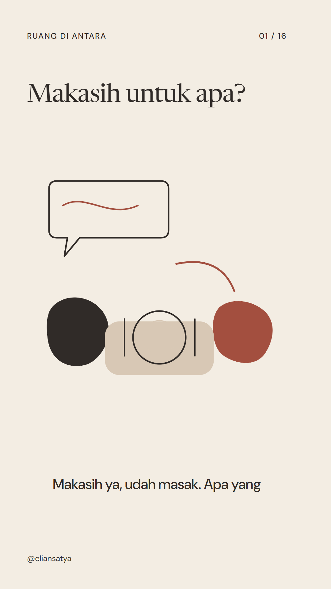
Makasih ya, udah masak. Apa yang sebenarnya lo hargai dari dia malam itu?
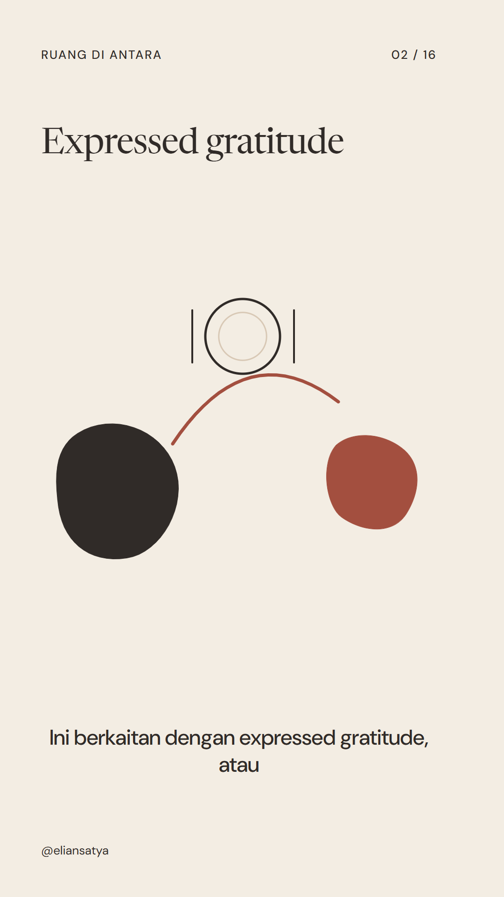
Ini berkaitan dengan expressed gratitude, atau ungkapan rasa syukur: menyampaikan penghargaan atas kebaikan orang lain.
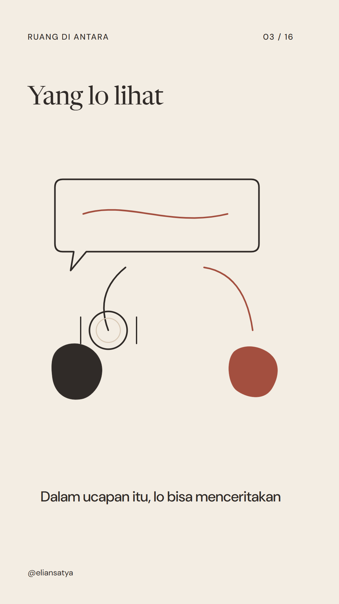
Dalam ucapan itu, lo bisa menceritakan manfaat buat diri lo, sekaligus menghargai tindakan dia.
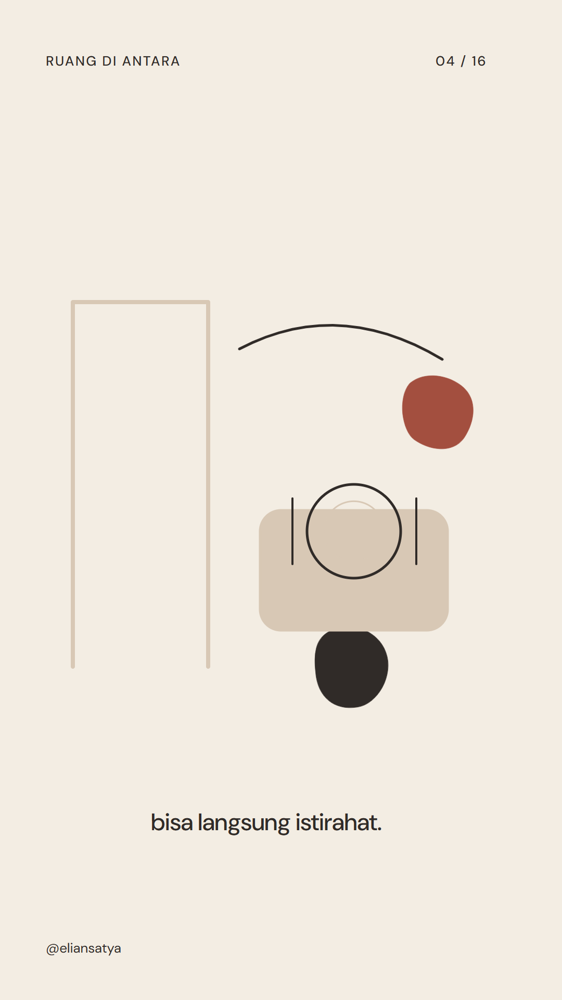
Misalnya, lo pulang capek. Makanan udah siap, jadi lo bisa langsung istirahat.
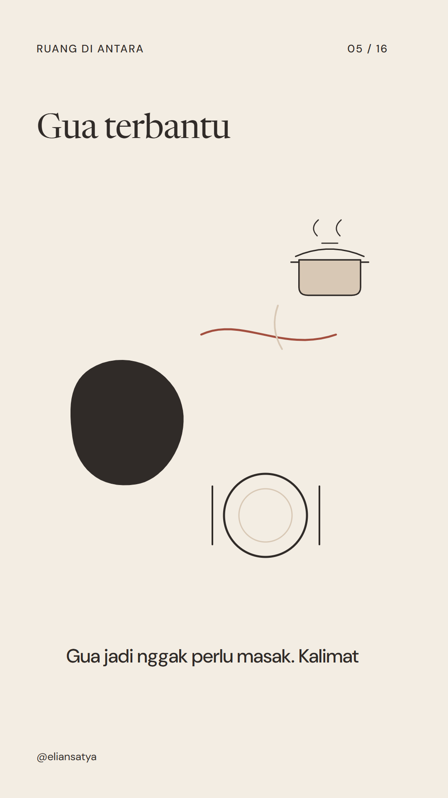
Gua jadi nggak perlu masak. Kalimat ini menceritakan manfaat yang lo terima.
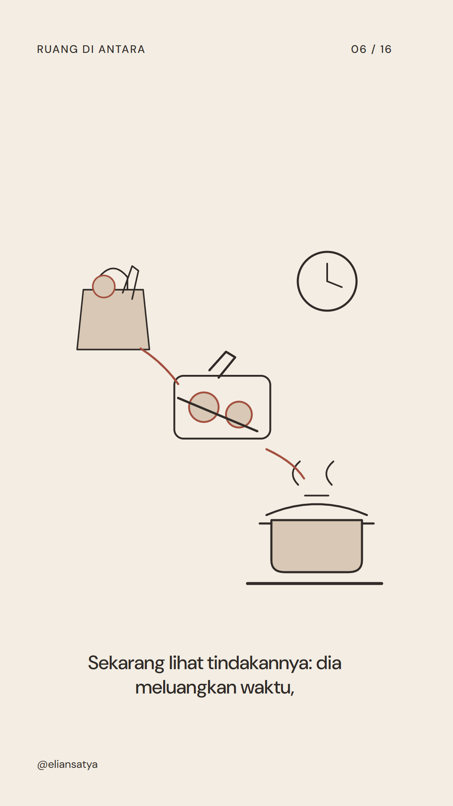
Sekarang lihat tindakannya: dia meluangkan waktu, menyiapkan bahan, lalu memasak setelah kegiatannya sendiri.
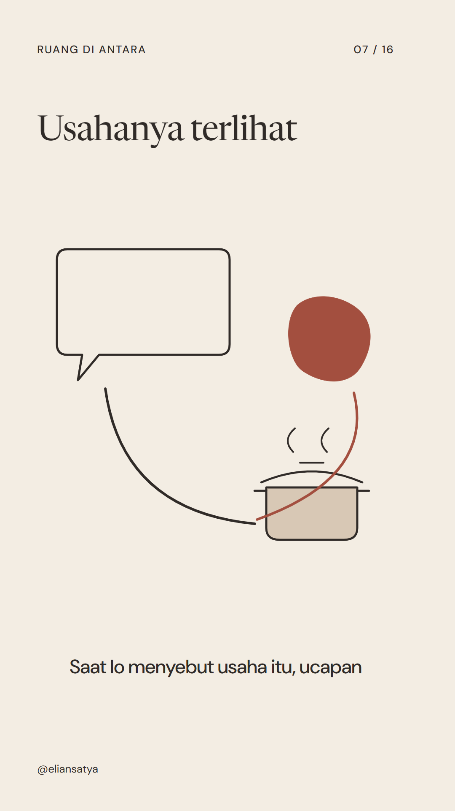
Saat lo menyebut usaha itu, ucapan terima kasih memberi tempat buat kontribusinya.
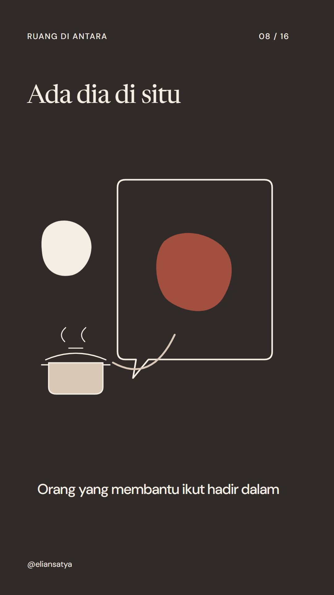
Orang yang membantu ikut hadir dalam ucapan lo.
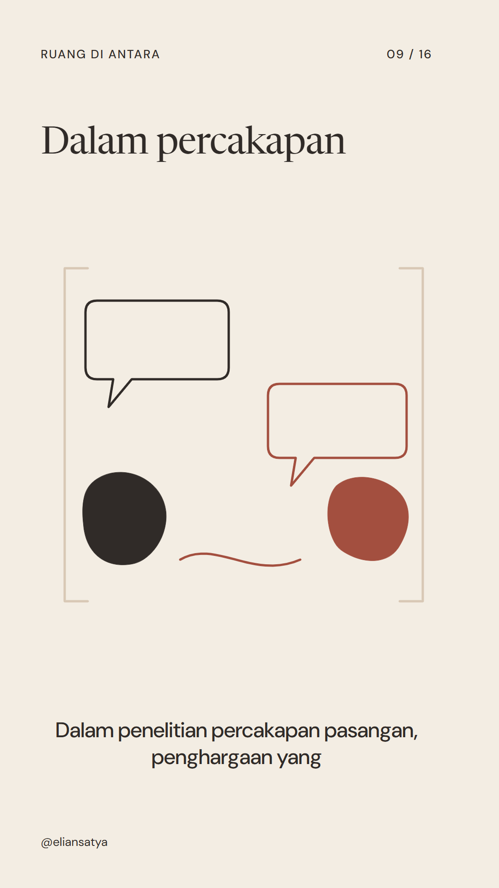
Dalam penelitian percakapan pasangan, penghargaan yang berfokus pada pasangan berkaitan dengan perasaan lebih disayangi sesudahnya.
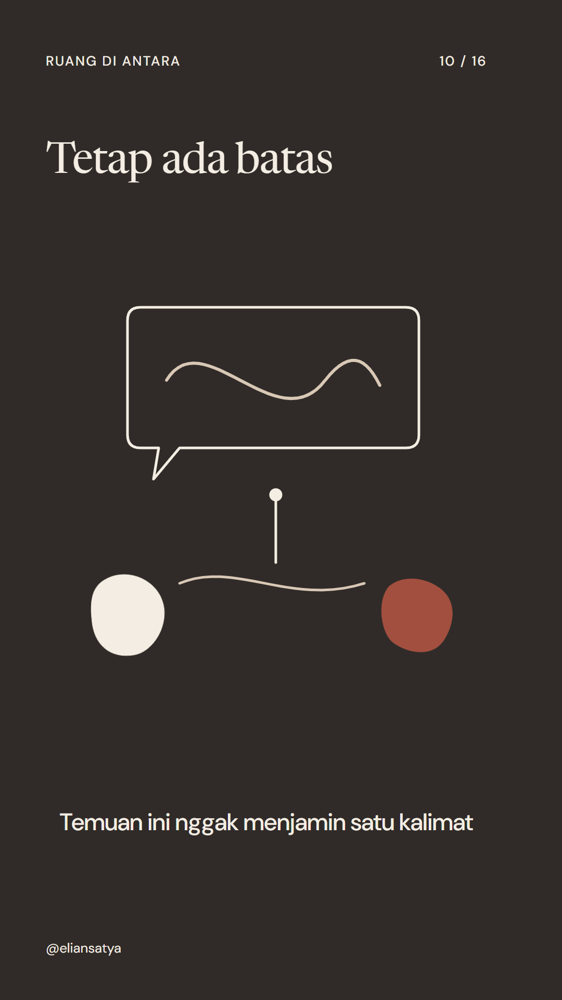
Temuan ini nggak menjamin satu kalimat bikin hubungan membaik, atau menghapus masalah yang perlu dibahas.
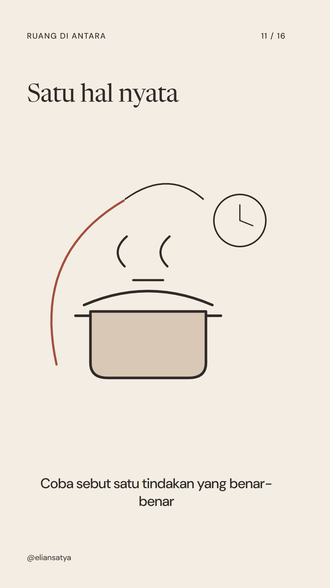
Coba sebut satu tindakan yang benar-benar lo perhatikan. Nggak perlu pujian berlebihan.
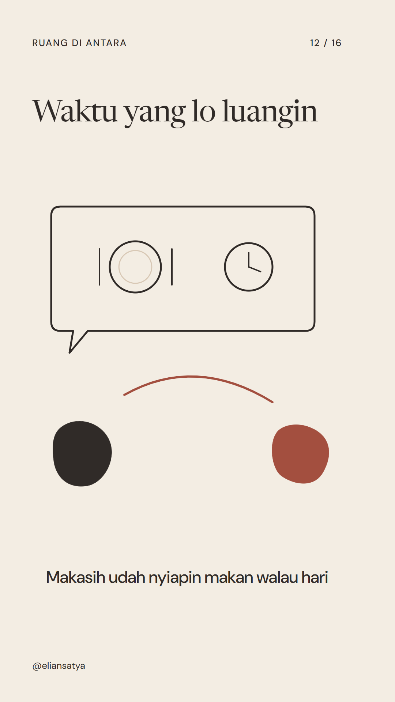
Makasih udah nyiapin makan walau hari lo juga padat. Gua menghargai waktu yang lo luangin.
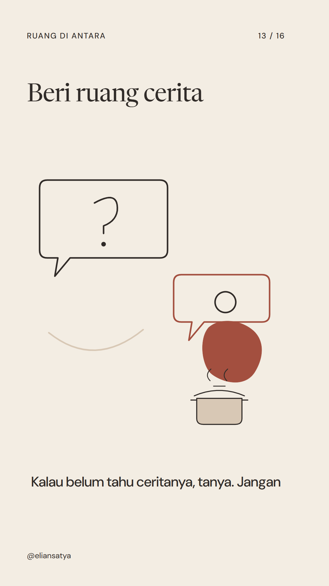
Kalau belum tahu ceritanya, tanya. Jangan mengarang pengorbanan yang dia nggak ceritakan.
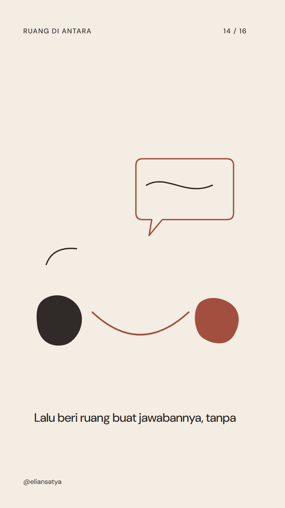
Lalu beri ruang buat jawabannya, tanpa menagih balasan.
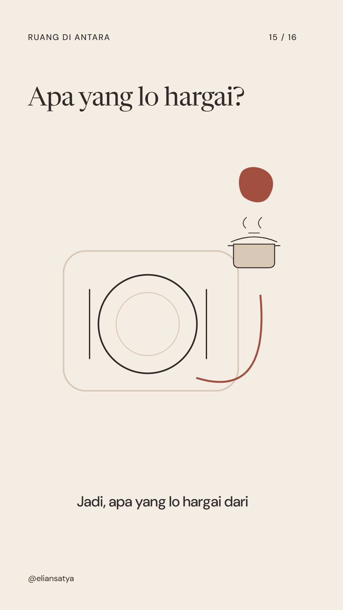
Jadi, apa yang lo hargai dari makan malam tadi?
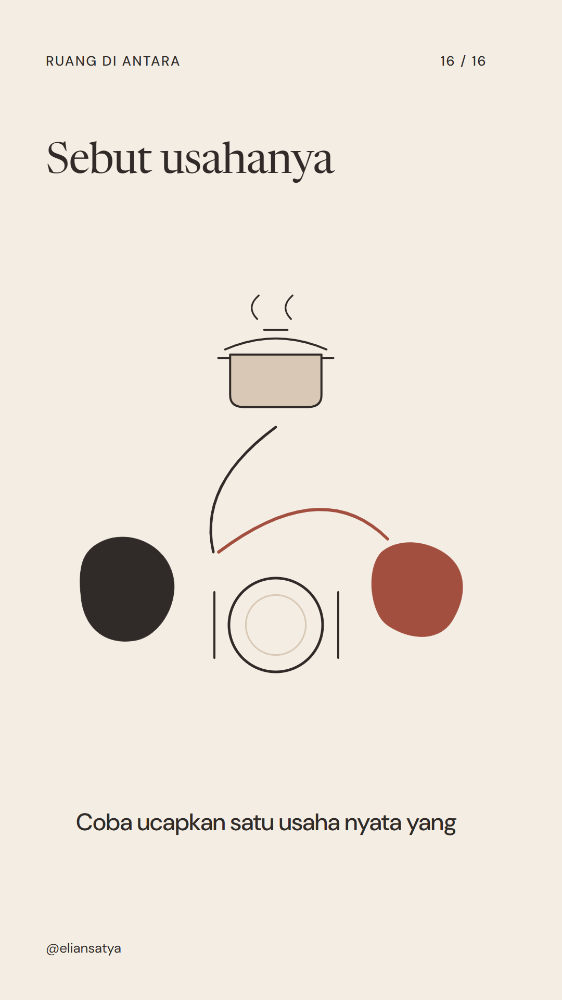
Coba ucapkan satu usaha nyata yang lo lihat darinya.